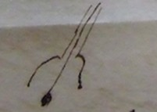

Thomas Beddoes to James Watt, February 1806
Dear Sir
I suppose you found Alcock had plunged like many young men – blindly into the patent office – Tis pity he does not prosecute anatomy & physiology –
I am drawing up my acct of the preventive Institution – which will be an arrangement of useful facts – I shall annex what cases I have of the successful use of airs – & then to <go on> to prosecute the enquiry – for if one can establish one point, one can make good one’s ground from that – But God knows if the state of public affairs will not defeat the end of all private endeavours –
I want to ask for light on this point. Could not an artificial leech be made? You know the inconveniences of natural leeches & of cupping Two modes suggest themselves – one by having several perforators like that of the leech (& why not better shaped?) turning on their axis – & a cupping glass after – another having a rough perforator with a cap coming tight upon ye skin & continued into a tube, which a person may suck with very likely something better will occur to you – & – I hardly know any thing that wd be more extensively useful – if it cd be made simple & cheapish –
Some time ago, I put out of my hands & into Johnson’s a medical jeu d’espirit, intended to be christened an almanac of health – I know he is printing it – he had it in time for ye new year, but acted like himself – However it will soon be out & it has no connection with any time of ye year as a beginning more than another – I have put prose & verse – jest & earnest, English & French all together – & wish it to circulate a while without the author being known – though God knows any body may detect him ‘by his stile’ If I have opporty I will send you a copy – though for so small a thing it is hardly worth carriage – But shd it attract any attention, I shd be obliged to you to listen & say what faults people find with it, if I see you before you forget – Mrs B’s infant has emerged from ye dangers of her own & artificial feeding & she is better herself after much reduction of strength.
She desires to be kindly remembered to you & Mrs Watt –
I am Dear Sir
Yrs truly
Thomas Beddoes
Address: James Watt Esq / Heathfield / Birmingham //
Endorsement: Dr Beddoes / Feby 1806 // artificial leech / almanac of Health
MS: LoB MS 3219/4/048/04